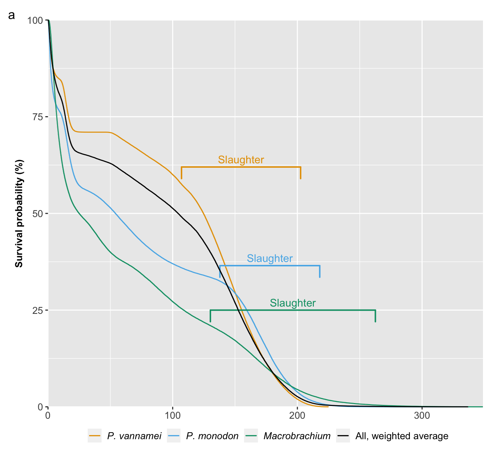
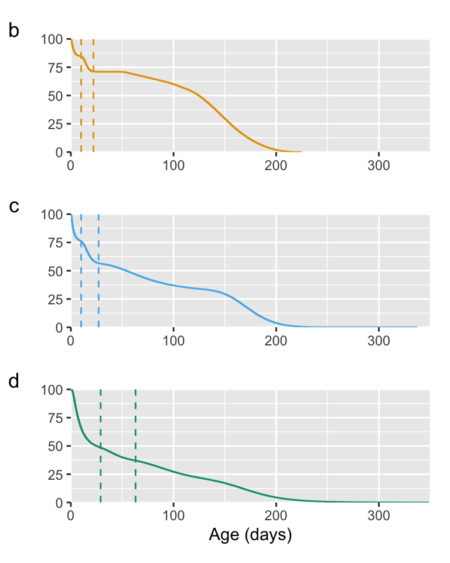
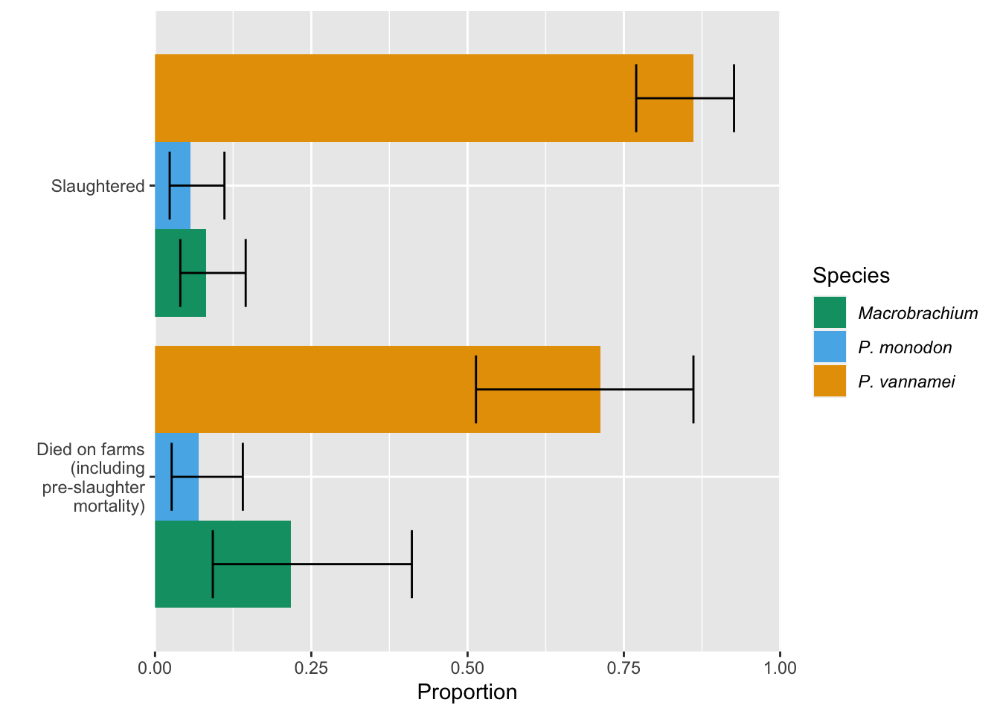
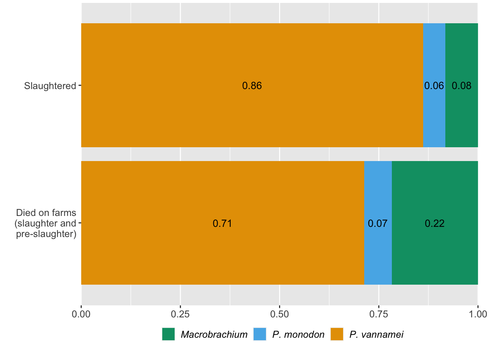

library(dplyr)
library(tidyr)
library(janitor)
library(kde1d)
library(kableExtra)
library(survival)
library(ggsurvfit)
library(ggpubr)
library(patchwork)
# at time of publication we need the ggplot v3.4.4 because the most recent version (3.5.0) does not work with the patchwork package
old.version <- "http://cran.r-project.org/src/contrib/Archive/ggplot2/ggplot2_3.4.4.tar.gz"
install.packages(old.version, repos=NULL, type="source")
library(ggplot2)
set.seed(123)1 Survival curves model
The aim of this chapter is to model the pre-slaughter mortality rates of farmed shrimp across the production cycle. We use the Guesstimate model by Waldhorn and Autric (2023), in which they estimated the number of shrimp farmed annually and alive at any time, to form the basis of our model.
We focus on three taxa: P. vannamei, P. monodon, and Macrobrachium—the latter covers M. rosenbergii and M. nipponese.
First, load the required packages and set the seed so that our data is reproducible.
Next, create functions to compare the summary statistics of two data frames.
give.summary=function(x,y){
knitr::kable(data.frame("original"=c(quantile(x, probs=c(0.05,0.5,0.95)),
mean=mean(x), sd=sd(x), min=min(x), max=max(x)),
"new"=c(quantile(y, probs=c(0.05,0.5,0.95)),
mean=mean(y), sd=sd(y), min=min(y), max=max(y))), table.attr = 'data-quarto-disable-processing="true"') %>%
kable_styling(full_width=FALSE, font_size=9)
}
give.full.summary=function(a1, b1, c1, a2, b2, c2){
knitr::kable(data.frame(
"original"=c(quantile(a1, probs=c(0.05,0.5,0.95)),
mean=mean(a1), sd=sd(a1), min=min(a1), max=max(a1)),
"new"=c(quantile(a2, probs=c(0.05,0.5,0.95)),
mean=mean(a2), sd=sd(a2), min=min(a2), max=max(a2)),
"original"=c(quantile(b1, probs=c(0.05,0.5,0.95)),
mean=mean(b1), sd=sd(b1), min=min(b1), max=max(b1)),
"new"=c(quantile(b2, probs=c(0.05,0.5,0.95)),
mean=mean(b2), sd=sd(b2), min=min(b2), max=max(b2)),
"original"=c(quantile(c1, probs=c(0.05,0.5,0.95)),
mean=mean(c1), sd=sd(c1), min=min(c1), max=max(c1)),
"new"=c(quantile(c2, probs=c(0.05,0.5,0.95)),
mean=mean(c2), sd=sd(c2), min=min(c2), max=max(c2))),
table.attr = 'data-quarto-disable-processing="true"',
col.names = rep(c("original", "new"), 3)) %>%
kable_styling(full_width=FALSE, font_size=9)
}1.1 Preparing data
For all the .csv files used in this chapter, see the GitHub repository.
We downloaded the 5000 samples created by the Guesstimate model for the three taxa for each of:
- The number of individuals that die on farms annually
- Days lived by life stage, given the shrimp dies in the life stage (e.g., a shrimp that dies in the larval stage lives for an average of two days)
- Mortality rates within each life stage, conditional upon having lived to that life stage
Note: the guesstimate model re-samples each time it is opened so the figures you see may differ slightly from those used here.
To best sample from the Guesstimate data (especially the tails of the distributions) and to remove errors created by Guesstimate (e.g., negative values), we generated 100,000 synthetic samples for each of these, based off the original 5000 guesstimate samples. To do this, we use the kde1d function, which estimates a kernel density function from the 5000 samples, and the rkde1d function, which generates n (in our case 100,000) samples from the estimated kernel density.
1.1.1 Number of shrimp that die on farms annually
Starting with the number of individuals that die on farms annually, we first load the samples from Guesstimate, then make the 100,000 samples.
# loading die on farms samples, taken from Guesstimate model
allspecies_dof_samp<-read.csv("../data/guesstimate/die_on_farm_samples.csv", header=TRUE, sep=",")
vannamei_dof<-allspecies_dof_samp$vannamei[allspecies_dof_samp$vannamei>0] %>% # Cell GZ in the Guesstimate model
# removing negative values created by Guesstimate
kde1d(xmin=0) %>% # running kde1d function and ensuring no values below 0 are created
rkde1d(100000,.) # creating 100,000 samples from the data
# now we can compare the summary statistics of the old and new data
give.summary(allspecies_dof_samp$vannamei, vannamei_dof)%>%
add_header_above(c("P. vannamei"=3)) # creating a header that spans the full 3 columns of the table
# repeat this for other taxa
monodon_dof<-allspecies_dof_samp$monodon[allspecies_dof_samp$monodon>0] %>% # Cell ES in the Guesstimate model
kde1d(xmin=0) %>%
rkde1d(100000,.)
give.summary(allspecies_dof_samp$monodon, monodon_dof)%>%
add_header_above(c("P. monodon"=3))
macro_dof<-allspecies_dof_samp$macrobrachium[allspecies_dof_samp$macrobrachium>0] %>% # Cell BZ in the Guesstimate model
kde1d(xmin=0) %>%
rkde1d(100000,.)
give.summary(allspecies_dof_samp$macrobrachium, macro_dof) %>%
add_header_above(c("Macrobrachium"=3))| original | new | |
|---|---|---|
| 5% | 3.539500e+11 | 3.517307e+11 |
| 50% | 5.810000e+11 | 5.791339e+11 |
| 95% | 9.980500e+11 | 1.003184e+12 |
| mean | 6.192688e+11 | 6.234259e+11 |
| sd | 4.229737e+11 | 2.956778e+11 |
| min | -1.490000e+13 | 5.696191e+08 |
| max | 8.250000e+12 | 8.060032e+12 |
| original | new | |
|---|---|---|
| 5% | 29395000000 | 29124727717 |
| 50% | 52900000000 | 52723011534 |
| 95% | 93605000000 | 93893586229 |
| mean | 56130860000 | 56014290871 |
| sd | 20685345595 | 20640193828 |
| min | 16000000000 | 21079491 |
| max | 216000000000 | 215982898786 |
| original | new | |
|---|---|---|
| 5% | 9.400000e+10 | 9.381296e+10 |
| 50% | 1.650000e+11 | 1.646129e+11 |
| 95% | 3.180000e+11 | 3.190560e+11 |
| mean | 1.802238e+11 | 1.804668e+11 |
| sd | 8.362092e+10 | 8.210190e+10 |
| min | 4.660000e+10 | 3.012260e+08 |
| max | 1.620000e+12 | 1.604432e+12 |
Now we can calculate the proportion of farmed shrimp accounted for by each species for each of our 100,000 samples.
allspecies_dof<-cbind(vannamei_dof, monodon_dof, macro_dof) # combining the 100,000 samples for each species into a data frame
prop_allspecies<-as.data.frame(allspecies_dof) %>%
rowwise() %>%
mutate(van_prop=vannamei_dof/sum(vannamei_dof, monodon_dof, macro_dof), # calculating each sample as a proportion of the total shrimp, row-wise
mon_prop=monodon_dof/sum(vannamei_dof, monodon_dof, macro_dof),
macro_prop=macro_dof/sum(vannamei_dof, monodon_dof, macro_dof))
prop_allspecies_dof<-as.data.frame(prop_allspecies[,4:6]) # keeping only the proportions1.1.2 Days lived by life stage
Next we load the data for the number of days lived by a shrimp, given that it dies within a certain life stage. The four life stages are larval, postlarval, juvenile-adult, and (if a shrimp survives all three) the days lived before slaughter, which we call the total farmed days.
# First load the data
vannamei_days_samp<-read.csv("../data/guesstimate/vannamei_days_lived.csv", header=TRUE,sep=",") # Cells TE, VO, XM, and QV in the Guesstimate model
monodon_days_samp<-read.csv("../data/guesstimate/monodon_days_lived.csv", header=TRUE, sep=",") # Cells MF, HI, OZ, and LW in the Guesstimate model
macrobrachium_days_samp<-read.csv("../data/guesstimate/macrobrachium_days_lived.csv", header=TRUE, sep=",") # Cells AS, BJ, EY, and XT in the Guesstimate model
# Next make the 100,000 samples
vannamei_days_lived<-data.frame(larval=rep(NA, 100000), # create empty data frame
postlarval=rep(NA, 100000),
juvenile.adult=rep(NA, 100000),
total.farmed=rep(NA, 100000))
# fill empty data frame with data simulated from Guesstimate data using kde1d function
vannamei_days_lived$larval<-vannamei_days_samp$larval %>%
kde1d(xmin=0) %>% # shrimp can't live for fewer than 0 days so we limit the distribution
rkde1d(100000,.)
vannamei_days_lived$postlarval<-vannamei_days_samp$postlarval %>%
kde1d() %>%
rkde1d(100000,.)
vannamei_days_lived$juvenile.adult<-vannamei_days_samp$juvenile.adult %>%
kde1d() %>%
rkde1d(100000,.)
give.full.summary(vannamei_days_samp$larval,
vannamei_days_samp$postlarval,
vannamei_days_samp$juvenile.adult,
vannamei_days_lived$larval,
vannamei_days_lived$postlarval,
vannamei_days_lived$juvenile.adult) %>%
add_header_above(c(" "=1, "larval" = 2, "postlarval" = 2, "juvenile-subadult" = 2)) %>%
add_header_above(c("P. vannamei"=7))
# repeat for other species
monodon_days_lived<-data.frame(larval=rep(NA, 100000),
postlarval=rep(NA, 100000),
juvenile.adult=rep(NA, 100000),
total.farmed=rep(NA, 100000))
monodon_days_lived$larval<-monodon_days_samp$larval %>%
kde1d(xmin=0) %>% # shrimp can't live for fewer than 0 days so we limit the distribution
rkde1d(100000,.)
monodon_days_lived$postlarval<-monodon_days_samp$postlarval %>%
kde1d() %>%
rkde1d(100000,.)
monodon_days_lived$juvenile.adult<-monodon_days_samp$juvenile.adult %>%
kde1d() %>%
rkde1d(100000,.)
give.full.summary(monodon_days_samp$larval,
monodon_days_samp$postlarval,
monodon_days_samp$juvenile.adult,
monodon_days_lived$larval,
monodon_days_lived$postlarval,
monodon_days_lived$juvenile.adult) %>%
add_header_above(c(" "=1, "larval" = 2, "postlarval" = 2, "juvenile-subadult" = 2)) %>%
add_header_above(c("P. monodon"=7))
macro_days_lived<-data.frame(larval=rep(NA, 100000),
postlarval=rep(NA, 100000),
juvenile.adult=rep(NA, 100000),
total.farmed=rep(NA, 100000))
macro_days_lived$larval<-macrobrachium_days_samp$larval %>%
kde1d(xmin=0) %>% # shrimp can't live for fewer than 0 days so we limit the distribution
rkde1d(100000,.)
macro_days_lived$postlarval<-macrobrachium_days_samp$postlarval %>%
kde1d() %>%
rkde1d(100000,.)
macro_days_lived$juvenile.adult<-macrobrachium_days_samp$juvenile.adult %>%
kde1d() %>%
rkde1d(100000,.)
give.full.summary(macrobrachium_days_samp$larval,
macrobrachium_days_samp$postlarval,
macrobrachium_days_samp$juvenile.adult,
macro_days_lived$larval,
macro_days_lived$postlarval,
macro_days_lived$juvenile.adult) %>%
add_header_above(c(" "=1, "larval" = 2, "postlarval" = 2, "juvenile-subadult" = 2)) %>%
add_header_above(c("Macrobrachium"=7))| original | new | original | new | original | new | |
|---|---|---|---|---|---|---|
| 5% | 0.5023743 | 0.4902677 | 11.154996 | 11.154865 | 53.13992 | 54.03571 |
| 50% | 2.1023025 | 2.1120241 | 14.918215 | 14.957922 | 80.29052 | 80.32173 |
| 95% | 8.5356682 | 8.9065270 | 20.017363 | 20.061194 | 106.91953 | 106.09696 |
| mean | 3.1018999 | 3.0744436 | 15.171321 | 15.198329 | 80.38564 | 80.26579 |
| sd | 3.2349854 | 3.1241976 | 2.734755 | 2.732966 | 17.21552 | 16.85421 |
| min | 0.1249571 | 0.0002519 | 7.741822 | 7.395876 | 50.03272 | 44.74333 |
| max | 33.8854679 | 33.7981077 | 30.754078 | 31.837442 | 109.99987 | 115.53883 |
| original | new | original | new | original | new | |
|---|---|---|---|---|---|---|
| 5% | 0.4963115 | 0.4996946 | 11.001184 | 11.068435 | 34.93126 | 35.489895 |
| 50% | 2.2152736 | 2.1858878 | 16.571929 | 16.617385 | 70.11952 | 70.076832 |
| 95% | 9.6407133 | 9.5278613 | 25.015574 | 24.962607 | 136.61865 | 136.631247 |
| mean | 3.2634577 | 3.2441306 | 17.106562 | 17.157913 | 76.12007 | 76.350636 |
| sd | 3.6398201 | 3.4359323 | 4.356787 | 4.337294 | 33.43386 | 33.148128 |
| min | 0.0212167 | 0.0009423 | 6.723713 | 5.253515 | 13.39687 | 2.849361 |
| max | 96.7623124 | 68.5132450 | 44.915889 | 46.008715 | 337.47740 | 338.425447 |
| original | new | original | new | original | new | |
|---|---|---|---|---|---|---|
| 5% | 1.9786751 | 1.9602180 | 29.987507 | 30.20970 | 60.63581 | 61.08796 |
| 50% | 7.6767357 | 7.6056272 | 42.342525 | 42.52669 | 95.11617 | 95.69554 |
| 95% | 29.9404670 | 29.3428149 | 59.741628 | 59.89201 | 149.64495 | 150.46335 |
| mean | 10.6956641 | 10.6289836 | 43.351758 | 43.47981 | 98.96567 | 99.29394 |
| sd | 10.5057846 | 10.1343738 | 9.262974 | 9.20008 | 27.81269 | 27.65936 |
| min | 0.4628982 | 0.0007937 | 20.471376 | 17.33767 | 31.35562 | 23.32129 |
| max | 159.2862181 | 155.5098833 | 82.711654 | 85.97558 | 300.38509 | 301.48431 |
Guesstimate produced a few large numbers of over one year for the total days farmed, which seems incorrect, so we remove these and restrict to:
- 215 days for P. vannamei (FAO (2009a) suggests the maximum cycle is 6 months in ongrowing with around a month of development prior to that, 7 months = ~214 days)
- 245 days for P. monodon (FAO (2009b) suggests the maximum cycle is >6 months in ongrowing, so we assume ~7 months, with around a month of development prior to that, 8 months = ~244 days)
- 335 day for Macrobrachium (New (2010, p.22; p.129) suggests that 11 months is the typical maximum length of a production cycle, 11 months= ~335.5 days)
The kde1d function will still produce a few samples just above this estimation.
vannamei_days_lived_total<-vannamei_days_samp$total_farmed_d[vannamei_days_samp$total_farmed_d<215]
vannamei_days_lived$total.farmed<-vannamei_days_lived_total %>%
kde1d() %>%
rkde1d(100000,.)
give.summary(vannamei_days_lived_total, vannamei_days_lived$total.farmed) %>%
add_header_above(c("P. vannamei" = 3))
monodon_days_lived_total<-monodon_days_samp$total_farmed_d[monodon_days_samp$total_farmed_d<245]
monodon_days_lived$total.farmed<-monodon_days_lived_total %>%
kde1d() %>%
rkde1d(100000,.)
give.summary(monodon_days_lived_total, monodon_days_lived$total.farmed) %>%
add_header_above(c("P. monodon" = 3))
macro_days_lived_total<-macrobrachium_days_samp$total_farmed_d[macrobrachium_days_samp$total_farmed_d<335]
macro_days_lived$total.farmed<-macro_days_lived_total %>%
kde1d() %>%
rkde1d(100000,.)
give.summary(macro_days_lived_total, macro_days_lived$total.farmed) %>%
add_header_above(c("Macrobrachium" = 3))| original | new | |
|---|---|---|
| 5% | 112.62194 | 112.85176 |
| 50% | 150.30559 | 150.24385 |
| 95% | 197.10220 | 195.97661 |
| mean | 151.83696 | 151.71481 |
| sd | 25.42041 | 25.13249 |
| min | 82.55418 | 70.23521 |
| max | 214.96775 | 225.03162 |
| original | new | |
|---|---|---|
| 5% | 143.34503 | 143.12522 |
| 50% | 172.88283 | 173.10137 |
| 95% | 211.21792 | 210.46603 |
| mean | 174.34588 | 174.47863 |
| sd | 20.53002 | 20.37596 |
| min | 112.22230 | 107.01303 |
| max | 244.54303 | 257.60783 |
| original | new | |
|---|---|---|
| 5% | 136.15204 | 136.34583 |
| 50% | 175.76759 | 176.33558 |
| 95% | 243.83641 | 242.91388 |
| mean | 180.73839 | 180.95648 |
| sd | 33.15951 | 32.80125 |
| min | 100.31524 | 94.01438 |
| max | 334.92005 | 348.78935 |
We will need the total farmed days in future chapters so we save them as csv files.
write.csv(data.frame(total.farmed=vannamei_days_lived$total.farmed),
file="../data/survival_curves/vannamei_totalfarmed_days.csv")
write.csv(data.frame(total.farmed=monodon_days_lived$total.farmed),
file="../data/survival_curves/monodon_totalfarmed_days.csv")
write.csv(data.frame(total.farmed=macro_days_lived$total.farmed),
file="../data/survival_curves/macro_totalfarmed_days.csv")1.1.3 Mortality rates by life stage
Now we load the data for the mortality rates samples, then make the 100,000 samples.
vannamei_mort_samp<-read.csv("../data/guesstimate/vannamei_mortality_rates.csv",header=TRUE, sep=",") # Cells UY, UJ, and TF in the Guesstimate model
monodon_mort_samp<-read.csv("../data/guesstimate/monodon_mortality_rates.csv", header=TRUE, sep=",") # Cells ZA, XZ, and YR in the Guesstimate model
macrobrachium_mort_samp<-read.csv("../data/guesstimate/macrobrachium_mortality_rates.csv", header=TRUE, sep=",") # Cells VG, OX, and QS in the Guesstimate model
vannamei_stage_prob<-data.frame(larval=rep(NA, 100000), # create empty data frame
postlarval=rep(NA, 100000),
juvenile.adult=rep(NA, 100000))
# fill empty data frame with data simulated from Guesstimate data using kde1d function
vannamei_stage_prob$larval<-vannamei_mort_samp$larval %>%
kde1d(xmin = 0,
xmax = 1) %>% # Probabilities cannot be less than 0 or more than 1 so we add these as xmin and xmax
rkde1d(100000,.)
vannamei_stage_prob$postlarval<-vannamei_mort_samp$postlarval %>%
kde1d(xmin = 0,
xmax = 1) %>%
rkde1d(100000,.)
vannamei_stage_prob$juvenile.adult<-vannamei_mort_samp$juvenile.adult[vannamei_mort_samp$juvenile.adult<1] %>%
kde1d(xmin = 0, # The juvenile-adult samples from Guesstimate sampled some instances over 1 so we get rid of these first, or else the xmin and xmax functions won't work
xmax = 1) %>%
rkde1d(100000,.)
give.full.summary(vannamei_mort_samp$larval,
vannamei_mort_samp$postlarval,
vannamei_mort_samp$juvenile.adult[vannamei_mort_samp$juvenile.adult<1],
vannamei_stage_prob$larval,
vannamei_stage_prob$postlarval,
vannamei_stage_prob$juvenile.adult) %>%
add_header_above(c(" "=1, "larval" = 2, "postlarval" = 2, "juvenile-subadult" = 2)) %>%
add_header_above(c("P. vannamei"=7))
# repeat for other taxa
monodon_stage_prob<-data.frame(larval=rep(NA, 100000),
postlarval=rep(NA, 100000),
juvenile.adult=rep(NA, 100000))
monodon_stage_prob$larval<-monodon_mort_samp$larval %>%
kde1d(xmin = 0,
xmax = 1) %>%
rkde1d(100000,.)
monodon_stage_prob$postlarval<-monodon_mort_samp$postlarval %>%
kde1d(xmin = 0,
xmax = 1) %>%
rkde1d(100000,.)
monodon_stage_prob$juvenile.adult<-monodon_mort_samp$juvenile.adult %>%
kde1d(xmin = 0,
xmax = 1) %>%
rkde1d(100000,.)
give.full.summary(monodon_mort_samp$larval,
monodon_mort_samp$postlarval,
monodon_mort_samp$juvenile.adult,
monodon_stage_prob$larval,
monodon_stage_prob$postlarval,
monodon_stage_prob$juvenile.adult) %>%
add_header_above(c(" "=1, "larval" = 2, "postlarval" = 2, "juvenile-subadult" = 2)) %>%
add_header_above(c("P. monodon"=7))
macro_stage_prob<-data.frame(larval=rep(NA, 100000),
postlarval=rep(NA, 100000),
juvenile.adult=rep(NA, 100000))
macro_stage_prob$larval<-macrobrachium_mort_samp$larval %>%
kde1d( xmin = 0,
xmax = 1) %>%
rkde1d(100000,.)
macro_stage_prob$postlarval<-macrobrachium_mort_samp$postlarval %>%
kde1d(xmin = 0,
xmax = 1) %>%
rkde1d(100000,.)
macro_stage_prob$juvenile.adult<-macrobrachium_mort_samp$juvenile.adult %>%
kde1d(xmin = 0,
xmax = 1) %>%
rkde1d(100000,.)
give.full.summary(macrobrachium_mort_samp$larval,
macrobrachium_mort_samp$postlarval,
macrobrachium_mort_samp$juvenile.adult,
macro_stage_prob$larval,
macro_stage_prob$postlarval,
macro_stage_prob$juvenile.adult) %>%
add_header_above(c(" "=1, "larval" = 2, "postlarval" = 2, "juvenile-subadult" = 2)) %>%
add_header_above(c("Macrobrachium"=7))| original | new | original | new | original | new | |
|---|---|---|---|---|---|---|
| 5% | 0.0996531 | 0.0972387 | 0.1001447 | 0.0999791 | 0.0508207 | 0.0506593 |
| 50% | 0.1500220 | 0.1496121 | 0.1504374 | 0.1507727 | 0.1420997 | 0.1439536 |
| 95% | 0.2266631 | 0.2282536 | 0.2224142 | 0.2237825 | 0.3944276 | 0.3936253 |
| mean | 0.1547854 | 0.1556152 | 0.1545581 | 0.1551854 | 0.1719317 | 0.1725749 |
| sd | 0.0392371 | 0.0526141 | 0.0383756 | 0.0416042 | 0.1161365 | 0.1155133 |
| min | 0.0696998 | 0.0000104 | 0.0578250 | 0.0012256 | 0.0179568 | 0.0000372 |
| max | 0.3435277 | 0.9980489 | 0.3702702 | 0.9978175 | 0.9591167 | 0.9985386 |
| original | new | original | new | original | new | |
|---|---|---|---|---|---|---|
| 5% | 0.2001242 | 0.1997098 | 0.1995617 | 0.1989895 | 0.2104763 | 0.0639917 |
| 50% | 0.2449577 | 0.2449867 | 0.2447093 | 0.2453887 | 0.2991240 | 0.3483152 |
| 95% | 0.2997172 | 0.2995932 | 0.2994525 | 0.3017630 | 0.3896331 | 0.9384648 |
| mean | 0.2466252 | 0.2466316 | 0.2467749 | 0.2485648 | 0.2998994 | 0.4302422 |
| sd | 0.0301440 | 0.0351535 | 0.0306094 | 0.0465916 | 0.0573127 | 0.2615026 |
| min | 0.1525521 | 0.0000248 | 0.1552940 | 0.0002576 | 0.2000194 | 0.0000026 |
| max | 0.3766730 | 0.9934958 | 0.3703696 | 0.9999699 | 0.3999908 | 0.9999854 |
| original | new | original | new | original | new | |
|---|---|---|---|---|---|---|
| 5% | 0.4006129 | 0.3996983 | 0.1008623 | 0.1006506 | 0.3992222 | 0.3987035 |
| 50% | 0.5273712 | 0.5285526 | 0.1724686 | 0.1729053 | 0.4911646 | 0.4906385 |
| 95% | 0.6972928 | 0.7002748 | 0.3006805 | 0.3030567 | 0.5980952 | 0.5996646 |
| mean | 0.5365256 | 0.5366353 | 0.1832576 | 0.1840283 | 0.4936169 | 0.4935724 |
| sd | 0.0919400 | 0.0932098 | 0.0629856 | 0.0668443 | 0.0604250 | 0.0653766 |
| min | 0.2764604 | 0.0028506 | 0.0508418 | 0.0001643 | 0.3071373 | 0.0001255 |
| max | 0.9617491 | 0.9555300 | 0.5317322 | 0.9961765 | 0.7339364 | 0.9953234 |
We will need these stage probabilities in future chapters, so we save them as .csv files.
van.stages<-vannamei_stage_prob
mon.stages<-monodon_stage_prob
macro.stages<-macro_stage_prob
van.stages$species<-rep("vannamei")
mon.stages$species<-rep("monodon")
macro.stages$species<-rep("macrobrachium")
shrimp_prob.stages<-rbind(van.stages, mon.stages, macro.stages)
write.csv(shrimp_prob.stages, file="../data/survival_curves/bystage_farmed_shrimp_model_probs.csv")Right now we have the probability that a shrimp dies in each stage, conditional on the shrimp having survived previous stages. However, we want the cumulative probability of a shrimp dying at each life stage—for example, the probability of dying in the postlarval stage is \(1-p(dying\ in\ larval\ stage)*p(dying\ in\ postlarval\ stage)\).
We also calculate the probability of a shrimp surviving to slaughter age, which means it has survived all of the larval, postlarval, and juvenile-adult stages.
# create four new columns with the total probability they make it to each stage
vannamei_stage_prob_total<-vannamei_stage_prob %>%
rowwise() %>%
mutate(larval.total=larval, postlarval.total=(1-larval)*postlarval,
juvenile.adult.total=(1-larval)*(1-postlarval)*juvenile.adult,
slaughter.age=(1-larval)*(1-postlarval)*(1-juvenile.adult))
vannamei_stage_prob_total<-as.data.frame(vannamei_stage_prob_total[,4:7]) # keep only the totals
# repeat for other species
monodon_stage_prob_total<-monodon_stage_prob %>%
rowwise() %>%
mutate(larval.total=larval, postlarval.total=(1-larval)*postlarval,
juvenile.adult.total=(1-larval)*(1-postlarval)*juvenile.adult,
slaughter.age=(1-larval)*(1-postlarval)*(1-juvenile.adult))
monodon_stage_prob_total<-as.data.frame(monodon_stage_prob_total[,4:7])
macro_stage_prob_total<-macro_stage_prob %>%
rowwise() %>%
mutate(larval.total=larval, postlarval.total=(1-larval)*postlarval,
juvenile.adult.total=(1-larval)*(1-postlarval)*juvenile.adult,
slaughter.age=(1-larval)*(1-postlarval)*(1-juvenile.adult))
macro_stage_prob_total<-as.data.frame(macro_stage_prob_total[,4:7]) We will need the probability that a shrimp makes it to slaughter age in future chapters, so we save .csv files of that data here.
van.slaught<-data.frame(slaughter.age=vannamei_stage_prob_total$slaughter.age,
species=rep("vannamei"))
mon.slaught<-data.frame(slaughter.age=monodon_stage_prob_total$slaughter.age,
species=rep("monodon"))
macro.slaught<-data.frame(slaughter.age=macro_stage_prob_total$slaughter.age,
species=rep("macrobrachium"))
write.csv(van.slaught, file="../data/survival_curves/vannamei_model_slaughter_probs.csv")
write.csv(mon.slaught, file="../data/survival_curves/monodon_model_slaughter_probs.csv")
write.csv(macro.slaught, file="../data/survival_curves/macro_model_slaughter_probs.csv")1.2 Calculating pre-slaughter mortality rates
Now we can calculate the pre-slaughter mortality rate across the production cycle. This will form the survival curves model.
To get a weighted average mortality rate we need to weight the life stage rates by the probability a shrimp is from a given species. We start by creating vector of species chosen according to probabilities from proportions calculated above (see Section 1.1.1).
psm_species_chosen = vapply(
1:100000,
function(i) {sample.int(3, size=1, prob=prop_allspecies_dof[i, ])},
integer(1))
# Check that the proportions look correct
print(data.frame(vannamei.prop=length(psm_species_chosen[psm_species_chosen==1])/length(psm_species_chosen),
monodon.prop=length(psm_species_chosen[psm_species_chosen==2])/length(psm_species_chosen),
macro.prop=length(psm_species_chosen[psm_species_chosen==3])/length(psm_species_chosen))) vannamei.prop monodon.prop macro.prop
1 0.71295 0.07009 0.21696Now, we make a data frame of 100,000 stage probabilities, weighted by the proportion of farmed shrimp that comes from each species.
psm_stage_probabilities = matrix(NA, nrow=100000, ncol=4)
for (i in 1:100000){
if (psm_species_chosen[i] == 1){
psm_stage_probabilities[i, ] = as.matrix(vannamei_stage_prob_total[i,])
}
if (psm_species_chosen[i] == 2){
psm_stage_probabilities[i, ] = as.matrix(monodon_stage_prob_total[i,])
}
if (psm_species_chosen[i] == 3){
psm_stage_probabilities[i, ] = as.matrix(macro_stage_prob_total[i,])
}
}
head(psm_stage_probabilities) [,1] [,2] [,3] [,4]
[1,] 0.2397400 0.18531724 0.12371699 0.4512258
[2,] 0.1203589 0.10773300 0.08474946 0.6871587
[3,] 0.1533023 0.16083359 0.12652428 0.5593398
[4,] 0.1441758 0.10392355 0.07251141 0.6793893
[5,] 0.2165459 0.08968865 0.43641968 0.2573458
[6,] 0.6248090 0.03477258 0.16410685 0.1763116Now we can calculate the weighted days lived for each life stage of each species.
psm_overall_proportion_days_lived = rep(NA, 100000)
for (i in 1:100000){
psm_stage_chosen <- sample.int(4, size=1, prob=psm_stage_probabilities[i, ])
# P. vannamei
if (psm_species_chosen[i] == 1){
if (psm_stage_chosen == 1){
psm_overall_proportion_days_lived[i] = vannamei_days_lived$larval[i]
}
if (psm_stage_chosen == 2){
psm_overall_proportion_days_lived[i] = vannamei_days_lived$postlarval[i]
}
if (psm_stage_chosen == 3){
psm_overall_proportion_days_lived[i] = vannamei_days_lived$juvenile.adult[i]
}
if (psm_stage_chosen == 4){
psm_overall_proportion_days_lived[i] = vannamei_days_lived$total.farmed[i]
}
}
# P. monodon
if (psm_species_chosen[i] == 2){
if (psm_stage_chosen == 1){
psm_overall_proportion_days_lived[i] = monodon_days_lived$larval[i]
}
if (psm_stage_chosen == 2){
psm_overall_proportion_days_lived[i] = monodon_days_lived$postlarval[i]
}
if (psm_stage_chosen == 3){
psm_overall_proportion_days_lived[i] = monodon_days_lived$juvenile.adult[i]
}
if (psm_stage_chosen == 4){
psm_overall_proportion_days_lived[i] = monodon_days_lived$total.farmed[i]
}
}
# Macrobrachium
if(psm_species_chosen[i]==3){
if (psm_stage_chosen == 1){
psm_overall_proportion_days_lived[i] = macro_days_lived$larval[i]
}
if (psm_stage_chosen == 2){
psm_overall_proportion_days_lived[i] = macro_days_lived$postlarval[i]
}
if (psm_stage_chosen == 3){
psm_overall_proportion_days_lived[i] = macro_days_lived$juvenile.adult[i]
}
if (psm_stage_chosen == 4){
psm_overall_proportion_days_lived[i] = macro_days_lived$total.farmed[i]
}
}
}
# Clean up the output by making it a data frame and labeling variables
df_all<-as.data.frame(psm_overall_proportion_days_lived)
df_all$species<-rep("all", 100000)
colnames(df_all)<-c("value", "species")The above gives us a vector of 100,000 samples which equate to the days lived by the weighted average farmed shrimp.
We now need to repeat the method, without weighting, for each species so that we can compare mortality across species.
P. vannamei
vannamei_stage_probabilities<-as.matrix(vannamei_stage_prob_total)
vannamei_overall_proportion_days_lived = rep(NA, 100000)
for (i in 1:100000){
vannamei_stage_chosen <- sample.int(4, size=1, prob=vannamei_stage_probabilities[i, ])
if (vannamei_stage_chosen == 1){
vannamei_overall_proportion_days_lived[i] = vannamei_days_lived$larval[i]
}
if (vannamei_stage_chosen == 2){
vannamei_overall_proportion_days_lived[i] = vannamei_days_lived$postlarval[i]
}
if (vannamei_stage_chosen == 3){
vannamei_overall_proportion_days_lived[i] = vannamei_days_lived$juvenile.adult[i]
}
if (vannamei_stage_chosen == 4){
vannamei_overall_proportion_days_lived[i] = vannamei_days_lived$total.farmed[i]
}
}
# Cleaning the output
df_vannamei<-as.data.frame(vannamei_overall_proportion_days_lived)
df_vannamei$species<-rep("vannamei", 100000)
colnames(df_vannamei)<-c("value", "species")P. monodon
monodon_stage_probabilities<-as.matrix(monodon_stage_prob_total)
monodon_overall_proportion_days_lived = rep(NA, 100000)
for (i in 1:100000){
monodon_stage_chosen <- sample.int(4, size=1, prob=monodon_stage_probabilities[i, ])
if (monodon_stage_chosen == 1){
monodon_overall_proportion_days_lived[i] = monodon_days_lived$larval[i]
}
if (monodon_stage_chosen == 2){
monodon_overall_proportion_days_lived[i] = monodon_days_lived$postlarval[i]
}
if (monodon_stage_chosen == 3){
monodon_overall_proportion_days_lived[i] = monodon_days_lived$juvenile.adult[i]
}
if (monodon_stage_chosen == 4){
monodon_overall_proportion_days_lived[i] = monodon_days_lived$total.farmed[i]
}
}
df_monodon<-as.data.frame(monodon_overall_proportion_days_lived)
df_monodon$species<-rep("monodon", 100000)
colnames(df_monodon)<-c("value", "species")Macrobrachium
macro_stage_probabilities<-macro_stage_prob_total
macro_overall_proportion_days_lived = rep(NA, 100000)
for (i in 1:100000){
macro_stage_chosen <- sample.int(4, size=1, prob=macro_stage_probabilities[i, ])
if (macro_stage_chosen == 1){
macro_overall_proportion_days_lived[i] = macro_days_lived$larval[i]
}
if (macro_stage_chosen == 2){
macro_overall_proportion_days_lived[i] = macro_days_lived$postlarval[i]
}
if (macro_stage_chosen == 3){
macro_overall_proportion_days_lived[i] = macro_days_lived$juvenile.adult[i]
}
if (macro_stage_chosen == 4){
macro_overall_proportion_days_lived[i] = macro_days_lived$total.farmed[i]
}
}
df_macro<-as.data.frame(macro_overall_proportion_days_lived)
df_macro$species<-rep("Macrobrachium", 100000)
colnames(df_macro)<-c("value", "species")With all three taxa calculated, we now combine this with the weighted average into one data frame.
df_spec<-rbind(df_vannamei, df_monodon, df_macro, df_all)
df_spec$species<-factor(df_spec$species, levels=c(
"vannamei", "monodon", "Macrobrachium", "all"))1.3 Fitting and plotting survival curves
To fit the survival curves, we use the survfit2 function from the ggsurvfit package and the Surv function from the package survival. The survival curves are made using Kaplan-Meier estimation.
plot_datatest<-survfit2(Surv(
df_spec$value, event = rep(1, length(df_spec$value))) ~ species, data = df_spec) %>%
tidy_survfit()Finally, we plot the results.
survival_curves<-ggplot(data=plot_datatest[!plot_datatest$strata=="all",],
aes(x=time, y=estimate*100, color=strata)) +
geom_line()+
labs(x="Age (days)", y="Survival probability (%)") +
scale_x_continuous(#limits=c(0,300),
expand = c(0, 0)) +
scale_y_continuous(expand = c(0, 0)) +
theme(legend.position="bottom",
legend.title=element_blank(),
legend.key.size = unit(5, "mm"),
legend.text=element_text(size=10, hjust=0),
legend.spacing.x = unit(2, "mm"),
axis.text=element_text(size=10),
axis.title.y=element_text(size=10, face="bold"),
axis.title.x=element_blank(),
legend.box.spacing = unit(1, "mm"),
plot.margin = unit(c(1,1,1,1), "mm")) +
coord_cartesian(ylim=c(0,100), clip="off") +
# theme(plot.margin = unit(c(l=2,r=2,b=.2,t=.2), "lines")) +
geom_bracket(data=NULL, inherit.aes=FALSE,
xmin=quantile(vannamei_days_lived$total.farmed, probs=0.025),
xmax=quantile(vannamei_days_lived$total.farmed, probs=0.975),
y.position=62, label="Slaughter", tip.length=0.03,
color="#E69F00", size=.7) +
geom_bracket(data=NULL, inherit.aes=FALSE,
xmin=quantile(monodon_days_lived$total.farmed, probs=0.025),
xmax=quantile(monodon_days_lived$total.farmed, probs=0.975),
y.position=36.5, label="Slaughter", tip.length=0.03,
color="#56B4E9", size=.7) +
geom_bracket(data=NULL, inherit.aes=FALSE,
xmin=quantile(macro_days_lived$total.farmed, probs=0.025),
xmax=quantile(macro_days_lived$total.farmed, probs=0.975),
y.position=25, label="Slaughter", tip.length=0.03,
color="#009E73", size=.7) +
# we plot the weighted average with a separate geom so that it plots over the brackets
geom_line(data=plot_datatest[plot_datatest$strata=="all",],
aes(x=time, y=estimate*100, color=strata), show.legend=TRUE) +
scale_color_manual(values=c("#E69F00", "#56B4E9","#009E73", "#000000"),
labels=c(expression(italic("P. vannamei")),
expression(italic("P. monodon")),
expression(italic("Macrobrachium")),
"All, weighted average"
))
# plotting each species separately as well
p1<-ggplot(data=plot_datatest[plot_datatest$strata=="vannamei",],
aes(x=time, y=estimate*100, color=strata)) +
geom_line(color="#E69F00") +
labs(y="") +
scale_x_continuous(limits=c(0,350),
expand = c(0, 0)) +
scale_y_continuous(expand = c(0, 0)) +
theme(legend.position="none", plot.margin=unit(c(b=0.5,t=0.5,r=0.5, l=0), "lines"),
axis.title.x=element_blank()) +
#scale_color_manual(values=c("#E69F00","#56B4E9","#009E73")) +
geom_vline(xintercept=10, linetype="dashed", colour="#E69F00") + # cell NX in the Guesstimate model
geom_vline(xintercept=22, linetype="dashed", colour="#E69F00") # cell DA in the Guesstimate model
p2<-ggplot(data=plot_datatest[plot_datatest$strata=="monodon",],
aes(x=time, y=estimate*100)) +
geom_line(color="#56B4E9")+
labs(y="")+
scale_x_continuous(limits=c(0,350),
expand = c(0, 0)) +
scale_y_continuous(expand = c(0, 0)) +
theme(legend.position="none",
plot.margin=unit(c(b=0.5,t=0.5,r=0.5, l=0), "lines"),
axis.title.x=element_blank()) +
geom_vline(xintercept=10, linetype="dashed", colour="#56B4E9") + # cell LQ in the Guesstimate model
geom_vline(xintercept=27, linetype="dashed", colour="#56B4E9") # cell HJ in the Guesstimate model
p3<-ggplot(data=plot_datatest[plot_datatest$strata=="Macrobrachium",],
aes(x=time, y=estimate*100)) +
geom_line(color="#009E73")+
labs(x="Age (days)", y="") +
scale_x_continuous(limits=c(0,350),
expand = c(0, 0)) +
scale_y_continuous(expand = c(0, 0)) +
theme(legend.position="none",
plot.margin=unit(c(b=0.5,t=0.5,r=0.5, l=0), "lines"),
axis.title.y=element_blank()) +
geom_vline(xintercept=29, linetype="dashed", colour="#009E73") + # cell OD in the Guesstimate model
geom_vline(xintercept=63, linetype="dashed", colour="#009E73") # cell TK in the Guesstimate model

We also extract the average probability of making it to slaughter age for each species:
mean(vannamei_stage_probabilities[,4])[1] 0.5902775mean(monodon_stage_probabilities[,4])[1] 0.3225594mean(macro_stage_probabilities[,4])[1] 0.19145821.4 Comparing to slaughter statistics
We next compare the slaughter figures to the number that died on farms (including pre-slaughter mortality) in the same year.
slaughter<-read.csv("../data/guesstimate/slaughtered_samples.csv")
vannamei_slaught<-slaughter$vannamei %>%
kde1d() %>%
rkde1d(100000,.)
give.summary(slaughter$vannamei, vannamei_slaught) %>%
add_header_above(c("P. vannamei" = 3))
monodon_slaught<-slaughter$monodon %>%
kde1d() %>%
rkde1d(100000,.)
give.summary(slaughter$monodon, monodon_slaught) %>%
add_header_above(c("P. monodon" = 3))
macro_slaught<-slaughter$macrobrchium %>%
kde1d() %>%
rkde1d(100000,.)
give.summary(slaughter$macrobrchium, macro_slaught) %>%
add_header_above(c("Macrobrachium" = 3))
allspecies_slaught<-cbind(vannamei_slaught, monodon_slaught, macro_slaught) # combining the 100,000 samples for each species into a data frame
slaught_prop_allspecies<-as.data.frame(allspecies_slaught) %>%
rowwise() %>%
mutate(van_prop=vannamei_slaught/sum(vannamei_slaught, monodon_slaught, macro_slaught), # calculating each sample as a proportion of the total shrimp, row-wise
mon_prop=monodon_slaught/sum(vannamei_slaught, monodon_slaught, macro_slaught),
macro_prop=macro_slaught/sum(vannamei_slaught, monodon_slaught, macro_slaught))| original | new | |
|---|---|---|
| 5% | 220957800000 | 222476066766 |
| 50% | 342228500000 | 343470146341 |
| 95% | 529217650000 | 532874614636 |
| mean | 354766329600 | 356150888840 |
| sd | 96851040159 | 96858142911 |
| min | 144325000000 | 104518134351 |
| max | 952712000000 | 987182924790 |
| original | new | |
|---|---|---|
| 5% | 11860315356 | 11923173880 |
| 50% | 20858815142 | 20984152771 |
| 95% | 36622412461 | 36434870776 |
| mean | 22092898841 | 22176970451 |
| sd | 7815695540 | 7784774999 |
| min | 5996479921 | 4618419389 |
| max | 71459992373 | 73715081829 |
| original | new | |
|---|---|---|
| 5% | 20277647900 | 20563786382 |
| 50% | 31033290274 | 31051657941 |
| 95% | 46842577016 | 46844762225 |
| mean | 31986343208 | 32058892477 |
| sd | 8291128218 | 8209105772 |
| min | 10376290701 | 10599353581 |
| max | 86753502536 | 87744803041 |
Now we can compare the proportion of farmed shrimp from each species that are slaughtered annually and that die on farms annually.
# make all the data of interest into a data frame
comp_slaught_dof<-data.frame(Species=rep(c("vannamei", "monodon", "macrobrachium"), 2),
Type=c(
rep("Slaughtered", 3),
rep("Die on farms (including pre-slaughter mortality)", 3)),
Proportion=c(
mean(slaught_prop_allspecies$van_prop),
mean(slaught_prop_allspecies$mon_prop),
mean(slaught_prop_allspecies$macro_prop),
mean(prop_allspecies_dof$van_prop),
mean(prop_allspecies_dof$mon_prop),
mean(prop_allspecies_dof$macro_prop)),
Lower=c(
quantile(slaught_prop_allspecies$van_prop, probs=0.025),
quantile(slaught_prop_allspecies$mon_prop, probs=0.025),
quantile(slaught_prop_allspecies$macro_prop, probs=0.025),
quantile(prop_allspecies_dof$van_prop, probs=0.025),
quantile(prop_allspecies_dof$mon_prop, probs=0.025),
quantile(prop_allspecies_dof$macro_prop, probs=0.025)),
Upper=c(
quantile(slaught_prop_allspecies$van_prop, probs=0.975),
quantile(slaught_prop_allspecies$mon_prop, probs=0.975),
quantile(slaught_prop_allspecies$macro_prop, probs=0.975),
quantile(prop_allspecies_dof$van_prop, probs=0.975),
quantile(prop_allspecies_dof$mon_prop, probs=0.975),
quantile(prop_allspecies_dof$macro_prop, probs=0.975)))
# plot the results as individual bars
ggplot(comp_slaught_dof, aes(y=Type, x=Proportion, fill=Species)) +
geom_bar(stat="identity", position="dodge") +
geom_errorbar(aes(xmin=Lower, xmax=Upper), position=position_dodge(width=.9), width=.7) +
scale_fill_manual(values=c("#009E73","#56B4E9", "#E69F00"),
labels=c(
expression(italic("Macrobrachium")),
expression(italic("P. monodon")),
expression(italic("P. vannamei")))) +
scale_x_continuous(expand=c(0,0), limits=c(0,1)) +
scale_y_discrete(labels=c("Died on farms\n(including\npre-slaughter\nmortality)", "Slaughtered")) +
theme(legend.text = element_text(hjust=0)) +
ylab("") +
xlab("Proportion")
# plot as stacked bars
ggplot(comp_slaught_dof, aes(y=Type, x=Proportion, group=Species, fill=Species)) +
geom_bar(stat="identity", position="stack") +
geom_text(aes(label=round(Proportion, 2)),stat="identity",position=position_stack(vjust=.5), color="black", size=3.7) +
scale_fill_manual(values=c("#009E73","#56B4E9", "#E69F00"),
labels=c(expression(italic("Macrobrachium")), expression(italic("P. monodon")), expression(italic("P. vannamei")))) +
scale_x_continuous(expand=c(0,0), limits=c(0,1)) +
scale_y_discrete(labels=c("Died on farms\n(slaughter and\npre-slaughter)", "Slaughtered")) +
theme(legend.position="bottom",
legend.title=element_blank(),
legend.key.size = unit(5, "mm"),
legend.text=element_text(size=10, hjust=0),
legend.spacing.x = unit(2, "mm"),
axis.text=element_text(size=10),
axis.title.y=element_text(size=10, face="bold"),
axis.title.x=element_blank(),
legend.box.spacing = unit(1, "mm"),
plot.margin = unit(c(1,4,1,1), "mm")) +
ylab("") +
xlab("Mean proportion") 

1.5 Stage specific rates and numbers of individuals
Finally, we extract the mean and 95% credibility intervals for mortality rate at each life stage (including cumulative mortality rate) and number of individuals who die on farms at each stage (and in total).
# calculate individual deaths for each life stage of each species
van_total_larval_deaths<-mean(vannamei_dof)*mean(vannamei_stage_prob$larval)
van_left_after_larval<-mean(vannamei_dof)-van_total_larval_deaths
van_total_postlarval_deaths<-van_left_after_larval*mean(vannamei_stage_prob$postlarval)
van_left_after_postlarval<-van_left_after_larval-van_total_postlarval_deaths
van_total_juvenile_deaths<-van_left_after_postlarval*mean(vannamei_stage_prob$juvenile.adult)
van_left_after_juvenile<-van_left_after_postlarval-van_total_juvenile_deaths
van_total_psm<-mean(vannamei_dof)*(1-mean(vannamei_stage_probabilities[,4]))
mon_total_larval_deaths<-mean(monodon_dof)*mean(monodon_stage_prob$larval)
mon_left_after_larval<-mean(monodon_dof)-mon_total_larval_deaths
mon_total_postlarval_deaths<-mon_left_after_larval*mean(monodon_stage_prob$postlarval)
mon_left_after_postlarval<-mon_left_after_larval-mon_total_postlarval_deaths
mon_total_juvenile_deaths<-mon_left_after_postlarval*mean(monodon_stage_prob$juvenile.adult)
mon_left_after_juvenile<-mon_left_after_postlarval-mon_total_juvenile_deaths
mon_total_psm<-mean(monodon_dof)*(1-mean(monodon_stage_probabilities[,4]))
macro_total_larval_deaths<-mean(macro_dof)*mean(macro_stage_prob$larval)
macro_left_after_larval<-mean(macro_dof)-macro_total_larval_deaths
macro_total_postlarval_deaths<-macro_left_after_larval*mean(macro_stage_prob$postlarval)
macro_left_after_postlarval<-macro_left_after_larval-macro_total_postlarval_deaths
macro_total_juvenile_deaths<-macro_left_after_postlarval*mean(macro_stage_prob$juvenile.adult)
macro_left_after_juvenile<-macro_left_after_postlarval-macro_total_juvenile_deaths
macro_total_psm<-mean(macro_dof)*(1-mean(macro_stage_probabilities[,4]))
# make a data frame of the required data
mort_indivs<-data.frame(
species=c(rep("P. vannamei", 4), rep("P. monodon", 4), rep("Macrobrachium", 4)),
stage=rep(c("Larval", "Postlarval", "Juvenile-subadult", "Cumulative"), 3),
mortality_mean=c(
mean(vannamei_stage_prob$larval),
mean(vannamei_stage_prob$postlarval),
mean(vannamei_stage_prob$juvenile.adult),
(1-mean(vannamei_stage_probabilities[,4])),
mean(monodon_stage_prob$larval),
mean(monodon_stage_prob$postlarval),
mean(monodon_stage_prob$juvenile.adult),
(1-mean(monodon_stage_probabilities[,4])),
mean(macro_stage_prob$larval),
mean(macro_stage_prob$postlarval),
mean(macro_stage_prob$juvenile.adult),
(1-mean(macro_stage_probabilities[,4]))
),
mortality_lower=c(
quantile(vannamei_stage_prob$larval, probs=0.025),
quantile(vannamei_stage_prob$postlarval, probs=0.025),
quantile(vannamei_stage_prob$juvenile.adult, probs=0.025),
(1-quantile(vannamei_stage_probabilities[,4], probs=0.975)),
quantile(monodon_stage_prob$larval, probs=0.025),
quantile(monodon_stage_prob$postlarval, probs=0.025),
quantile(monodon_stage_prob$juvenile.adult, probs=0.025),
(1-quantile(monodon_stage_probabilities[,4], probs=0.975)),
quantile(macro_stage_prob$larval, probs=0.025),
quantile(macro_stage_prob$postlarval, probs=0.025),
quantile(macro_stage_prob$juvenile.adult, probs=0.025),
(1-quantile(macro_stage_probabilities[,4], probs=0.975))
),
mortality_upper=c(
quantile(vannamei_stage_prob$larval, probs=0.975),
quantile(vannamei_stage_prob$postlarval, probs=0.975),
quantile(vannamei_stage_prob$juvenile.adult, probs=0.975),
(1-quantile(vannamei_stage_probabilities[,4], probs=0.025)),
quantile(monodon_stage_prob$larval, probs=0.975),
quantile(monodon_stage_prob$postlarval, probs=0.975),
quantile(monodon_stage_prob$juvenile.adult, probs=0.975),
(1-quantile(monodon_stage_probabilities[,4], probs=0.025)),
quantile(macro_stage_prob$larval, probs=0.975),
quantile(macro_stage_prob$postlarval, probs=0.975),
quantile(macro_stage_prob$juvenile.adult, probs=0.975),
(1-quantile(macro_stage_probabilities[,4], probs=0.025))
),
individuals_mean=c(
van_total_larval_deaths,
van_total_postlarval_deaths,
van_total_juvenile_deaths,
van_total_psm,
mon_total_larval_deaths,
mon_total_postlarval_deaths,
mon_total_juvenile_deaths,
mon_total_psm,
macro_total_larval_deaths,
macro_total_postlarval_deaths,
macro_total_juvenile_deaths,
macro_total_psm
)
)
# add brackets to show the 95% credibility intervals
mort_indivs$Mortality<-paste0(
round(mort_indivs$mortality_mean, 2), " [",
round(mort_indivs$mortality_lower, 2), "; ",
round(mort_indivs$mortality_upper, 2), "]")
mort_indivis_pivot<-mort_indivs %>%
pivot_wider(id_cols = species, names_from = stage, values_from = c(Mortality, individuals_mean))
transpose_mort_indivis_pivot<-t(mort_indivis_pivot)
# print the results
kbl(transpose_mort_indivis_pivot) %>%
kable_styling(full_width=F, position="center", font_size=9, bootstrap_options = c("condensed"))| species | P. vannamei | P. monodon | Macrobrachium |
| Mortality_Larval | 0.16 [0.09; 0.25] | 0.25 [0.19; 0.31] | 0.54 [0.38; 0.74] |
| Mortality_Postlarval | 0.16 [0.09; 0.24] | 0.25 [0.19; 0.31] | 0.18 [0.09; 0.34] |
| Mortality_Juvenile-subadult | 0.17 [0.04; 0.48] | 0.43 [0.03; 0.97] | 0.49 [0.38; 0.62] |
| Mortality_Cumulative | 0.41 [0.27; 0.65] | 0.68 [0.44; 0.98] | 0.81 [0.71; 0.9] |
| individuals_mean_Larval | 97014532629 | 13814892071 | 96844873542 |
| individuals_mean_Postlarval | 81691380200 | 10489285669 | 15388806842 |
| individuals_mean_Juvenile-subadult | 76747517895 | 13643028391 | 33677996607 |
| individuals_mean_Cumulative | 255431609229 | 37946354695 | 145914976464 |
1.6 Data and method limitations
The data underpinning the survival curves does not account for broodstock (shrimp used as breeders). The figures also likely miss some small-scale or illegal farms and may not include “failed crops” with mass mortality due to, for example, diseases. The number of individuals is also sensitive to the inputted individual weight of shrimp, but data is scarce for this metric and slaughter weight likely changes over time and between locations. For a complete description of the limitations of the Monte-Carlo Guesstimate model which underpins our survival curves, see the appendix in Waldhorn and Autric (2023).